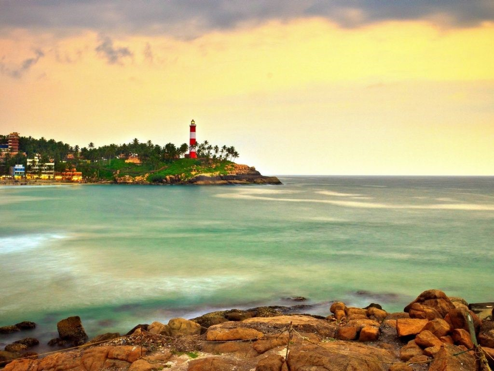

Varkala-Sandy Cliffs and Surfing Tides
When someone asks ‘What are the most beautiful beaches to visit in Kerala?’, the first answer is definitely Varkala! It is the only place in Kerala where you can find enticing cliffs by the sea, which makes Varkala beach stand out from the rest of the beach destinations in Kerala. Varkala is also known for water sports like parasailing and windsurfing because of its long tides and favourable weather.
Varkala is a quaint beach with shacks and a cliff overlooking the sea. One of the best things to do in Kerala is seeing the romantic sunset at Papanasam beach in Varkala. It is a beautiful experience to bring in with your loved ones. If you are lucky enough, you might also spot a few dolphins frolicking around in the sea. When you want to soak in some sun and sand in God’s Own Country, Varkala is where you should be heading.

Thiruvananthapuram-Capital of Kerala
Trivandrum or Thiruvananthapuram is Kerala’s buzzing capital. This vibrant city houses is an interesting mix of tradition and modernity. It is home to Sri Padmanabhaswamy Temple, the world’s richest temple and also to India’s first IT park, Technopark.
In your search for Kerala tourism places, Trivandrum is a must-visit. Whatever kind of traveller you are, you will surely be charmed by its appeal. It offers you beach spots, IT parks, historical palaces and museums. If you are looking for an enchanting combination of experiences that range from adventure to history to a love for scenic locations, Trivandrum is the place to be in.

Kovalam-Coconut Groves and Crescent Beaches
If you are looking for one of the best beaches in Kerala that offers a multitude of activities (including a surf club), Kovalam should be on your list. A popular ‘hippie’ hangout in the 70s, Kovalam is now a quiet beach town with three splendid crescent-shaped beaches – Hawa, Lighthouse, and Samudra.
There are a lot of food outlets dotting the shoreline and many beach sports to treat your adventurous soul. You can go sunbathing or enjoy a thrilling Catamaran ride. One of the best tourist attractions in Kerala, this charming beach town also happens to be where many enthusiasts opt to do yoga by the beach or enrol for a yoga teacher training program.